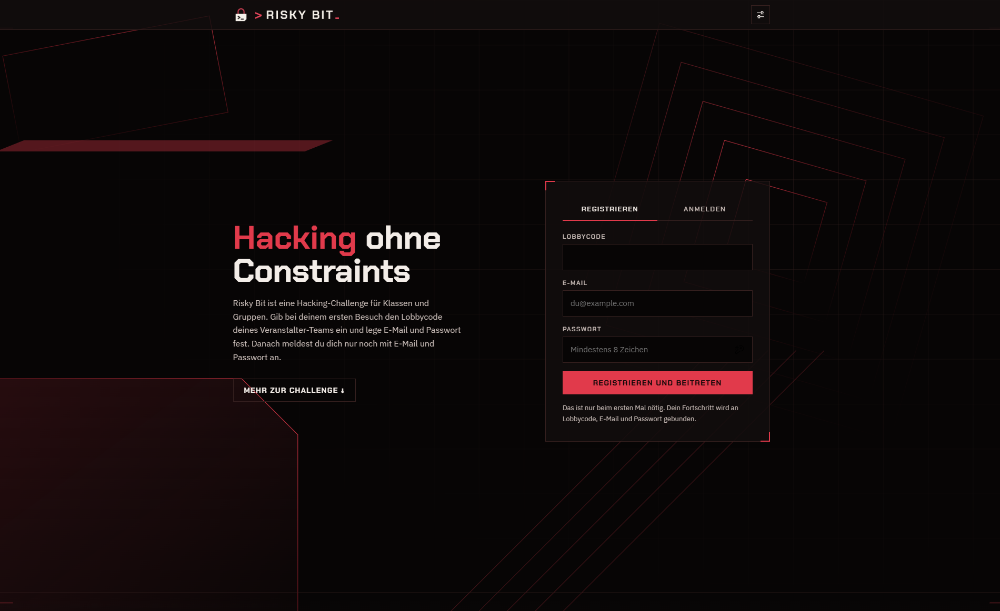
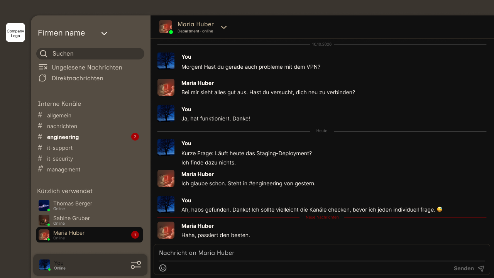
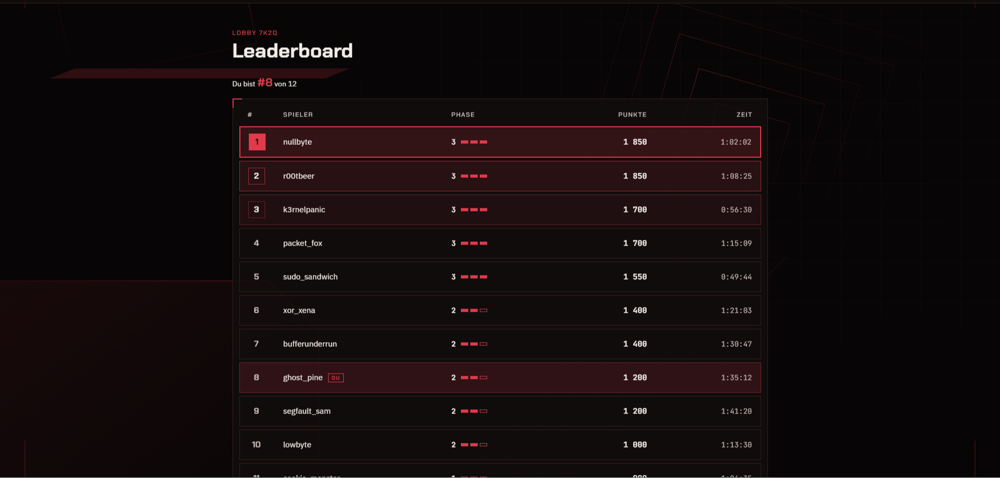
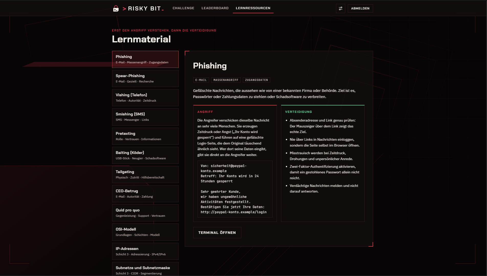

Events erstellen und beitreten
Jeder kann ein eigenes Event erstellen und lokal hosten. Teilnehmende treten per Lobbycode einem bestehenden Event zu. Mehrere Events können auf dem selben System gehostet werden.
Entwickelt für den Challenge-Ablauf
Die Funktionen der Plattform unterstützen Teilnehmende vom Beitritt bis zur Auswertung ihrer Aufgaben.

Jeder kann ein eigenes Event erstellen und lokal hosten. Teilnehmende treten per Lobbycode einem bestehenden Event zu. Mehrere Events können auf dem selben System gehostet werden.

Eine eigene Chatplattform simuliert mithilfe eines lokal gehosteten LLMs eine Umgebung, in der simulierte Social engineering Angriffe sicher und vertraulich durchgeführt werden können.
Für jede teilnehmende Person wird eine eigene Challenge-Umgebung erstellt, damit Teilnehmende einander nicht beeinflussen. Zusätlich verstärkt dies die Sicherheit des Systems und verhindert den Zugriff auf core-systeme während der Challenge.

Durch ein proprietäres Punktesystem, werden Angriffe anhand von vordefinierten Parametern gewertet und verglichen, um Teilnehmende zu motivieren durchdachte Angriffe durchzuführen.

Durch das durchführen eines realistischen Hacking-Szenarios lernen Teilnehmende wichtige Konzepte der Cybersecurity kennen. Ebenfalls können die bereitgestellten Lernressourcen als Unterstützung verwendet werden. Diese sind so abgestimmt, das sie helfen, aber nicht den Lösungsweg verraten.